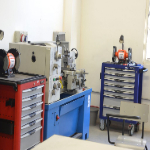

Bienvenido, Profesor
Ingeniería 1

Este curso introduce a los estudiantes en los principios fundamentales de la ingeniería, abarcando áreas como la física, las matemáticas y la resolución de problemas. Los estudiantes aprenderán a aplicar estos conceptos en proyectos prácticos que les permitirán desarrollar habilidades de pensamiento crítico y creativo.
Programación 2
En este curso, los estudiantes profundizarán en los conceptos de programación, explorando temas avanzados como estructuras de datos, algoritmos y paradigmas de programación. A través de ejercicios prácticos y proyectos, los estudiantes mejorarán su capacidad para desarrollar software eficiente y escalable.
Estadística 2

La estadística es una herramienta fundamental en la toma de decisiones en una amplia gama de campos. En este curso, los estudiantes aprenderán técnicas estadísticas avanzadas y su aplicación en la interpretación y análisis de datos. Se explorarán temas como la inferencia estadística, el diseño de experimentos y el modelado estadístico.
Desarrollo 4
El curso de Desarrollo 4 se centra en enseñar las habilidades y técnicas necesarias para desarrollar software de alta calidad y eficiencia. Los estudiantes aprenderán sobre los principios fundamentales del desarrollo de software, así como sobre las tecnologías y herramientas más avanzadas utilizadas en la industria.
Filosofía
La filosofía es el estudio de los problemas fundamentales relacionados con la existencia, el conocimiento, la verdad, la moral, la mente y el lenguaje. En este curso, los estudiantes explorarán las ideas de filósofos destacados a lo largo de la historia y reflexionarán sobre cuestiones profundas relacionadas con la vida, el universo y todo lo demás.